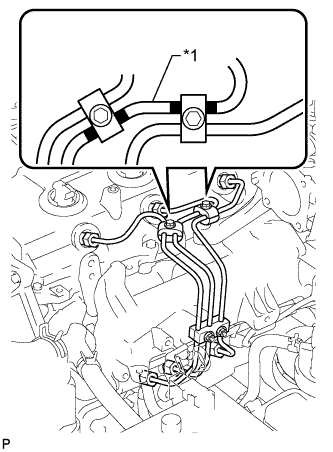
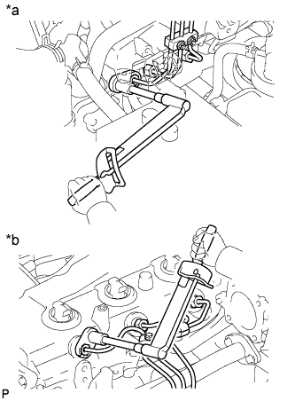

СВЕЧА НАКАЛИВАНИЯ (для моделей без DPF) > УСТАНОВКА |
| 1. УСТАНОВИТЕ СВЕЧУ НАКАЛИВАНИЯ |
Очистите отверстие для свечи накаливания.
Обмотайте сверло диаметром 4,4 мм (0,173 дюйма) защитной лентой на расстоянии 118,5 мм (4,665 дюйма) от конца.
Вставьте сверло 118,5 мм (4,665 дюйма) в отверстие для свечи накаливания (до ленты) и удалите весь нагар, поворачивая сверло рукой.
Вставьте сверло диаметром 4 мм (0,157 дюйма) в отверстие для свечи накаливания и удалите весь нагар в конце отверстия для свечи накаливания, поворачивая сверло рукой.
С помощью удлиненной торцевой головки на 12 мм установите свечу накаливания в сборе.
Установите 4 свечи накаливания.
| 2. УСТАНОВИТЕ ИЗОЛЯТОР ВПУСКНОГО КОЛЛЕКТОРА № 1 |
| 3. УСТАНОВИТЕ РАЗЪЕМ СВЕЧИ НАКАЛИВАНИЯ № 1 |
Предварительно установите разъем свечи накаливания № 1, закрепив его 4 гайками.
Затяните 4 гайки.
Установите 4 уплотнительные шайбы винта.
Подсоедините жгут проводов к разъему свечи накаливания № 1, закрепив его гайкой.
Установите уплотнительную шайбу винта.
| 4. УСТАНОВИТЕ ОПОРУ КОЛЛЕКТОРА № 2 |
Установите опору коллектора № 2 и закрепите ее болтом.
| 5. УСТАНОВИТЕ ОПОРУ ВПУСКНОГО ПАТРУБКА |
Закрепите опору впускного трубопровода болтом.
| 6. УСТАНОВИТЕ ПАТРУБОК ПОДАЧИ ВОЗДУХА С КОРПУСОМ ДРОССЕЛЬНОЙ ЗАСЛОНКИ ДИЗЕЛЬНОГО ДВИГАТЕЛЯ В СБОРЕ (для моделей без системы РОГ) |
 |
Установите новую прокладку на впускной коллектор.
 |
Установите патрубок подачи воздуха с корпусом дроссельной заслонки дизельного двигателя в сборе и закрепите 3 болтами.
Подсоедините разъем датчика положения дроссельной заслонки.
| 7. УСТАНОВИТЕ ОПОРУ ПАТРУБКА ПОДАЧИ ВОЗДУХА (для моделей без системы РОГ) |
 |
Предварительно установите опору патрубка подачи воздуха, закрепив ее 3 болтами.
Затяните болт, обозначенный А.
Затяните 2 болта В.
| 8. ПОДСОЕДИНИТЕ ЖГУТ ЭЛЕКТРОПРОВОДКИ ДВИГАТЕЛЯ (для моделей без системы РОГ) |
 |
Для моделей с левосторонним рулевым управлением:
Подсоедините жгут электропроводки двигателя с помощью зажима и вверните 2 болта.
 |
Для моделей с правосторонним рулевым управлением:
Подсоедините жгут электропроводки двигателя с помощью болта.
| 9. УСТАНОВИТЕ ТОПЛИВНЫЕ ТРУБКИ ВЫСОКОГО ДАВЛЕНИЯ № 1, № 2 И № 3 В СБОРЕ (для моделей без системы РОГ) |
Временно закрепите топливные трубки высокого давления № 1, № 2 и № 3 гайками штуцеров.
|  |
Закрепите зажимы топливных трубок высокого давления № 2 и № 3 2 болтами и 2 гайками, как показано на рисунке.
| *1 | Топливная трубка высокого давления № 2 |
|  |
С помощью разрезной головки на 17 мм затяните гайки штуцеров топливной трубки высокого давления со стороны топливной системы Common Rail.
| *a | Со стороны топливной системы Common Rail |
| *b | Со стороны форсунки |
С помощью разрезной головки на 17 мм затяните гайки штуцеров топливной трубки высокого давления со стороны форсунки.
| 10. УСТАНОВИТЕ КРОНШТЕЙН КОРПУСА ДРОССЕЛЬНОЙ ЗАСЛОНКИ (для моделей без системы РОГ) |
Установите корпус дроссельной заслонки и закрепите его 2 болтами.
Установите газовый фильтр с кронштейном газового фильтра и закрепите болтом.
Подсоедините вакуумный шланг.
| 11. УСТАНОВИТЕ ВПУСКНОЙ ПАТРУБОК № 1 (для моделей без системы РОГ) |
Подсоедините впускной патрубок № 1 с воздушным шлангом и вверните 2 болта.
Затяните 2 зажима воздушного шланга № 1.
Затяните зажим воздушного шланга промежуточного охладителя.
Подсоедините вакуумный шланг к разъему датчика абсолютного давления в коллекторе.
Подсоедините 3 разъема к датчику температуры воздуха на впуске, электродвигателю привода дроссельной заслонки и датчику абсолютного давления в коллекторе.
Установите 2 зажима.
| 12. УСТАНОВИТЕ ВАКУУМНУЮ ТРУБКУ № 4 В СБОРЕ (для моделей без системы РОГ) |
Подсоедините вакуумную трубку № 4 с помощью болта.
| 13. УСТАНОВИТЕ ВХОДНОЙ ПАТРУБОК ОТОПИТЕЛЯ (для моделей без системы РОГ) |
Подсоедините входной патрубок отопителя с помощью болта.
| 14. УСТАНОВИТЕ ЭЛЕКТРИЧЕСКИЙ КЛАПАН УПРАВЛЕНИЯ РОГ В СБОРЕ (для моделей с системой РОГ) |
Установите электрический клапан управления РОГ (Нажмите здесь).
| 15. ПОДСОЕДИНИТЕ ПРОВОД К ОТРИЦАТЕЛЬНОМУ ВЫВОДУ АККУМУЛЯТОРНОЙ БАТАРЕИ |
| 16. УДАЛИТЕ ВОЗДУХ ИЗ ТОПЛИВНОЙ СИСТЕМЫ |
 |
С помощью ручного насоса, установленного на крышке топливного фильтра, удалите воздух из топливной системы. Продолжайте прокачку, пока сопротивление насоса при работе не возрастет.
Запустите двигатель.
Если двигатель запускается, перейдите к следующему шагу.
Если запуск двигателя невозможен, прокачайте систему снова с помощью ручного насоса до повышения сопротивления насоса (см. процедуры выше). Затем запустите двигатель.
Выключите зажигание.
Подсоедините портативный диагностический прибор к DLC3.
Включите зажигание (IG) и портативный диагностический прибор.
Сбросьте коды DTC (Нажмите здесь).
Запустите двигатель.*1
 |
Войдите в следующие меню: Powertrain / Engine and ECT / Active Test / Test the Fuel Leak.*2
| *a | Для справки Испытание в режиме Active Test |
Выполните следующее испытание 5 раз с интервалами включения/выключения 10 с: Active Test / Test the Fuel Leak.*3
После 5-го испытания в режиме Active Test дайте двигателю поработать на холостом ходу в течение не менее 3 мин.

Войдите в следующие меню: Powertrain / Engine and ECT / DTC.
Считайте текущие коды DTC.
Сбросьте коды DTC (Нажмите здесь).
Повторите операции с *1 по *3.
Войдите в следующие меню: Powertrain / Engine and ECT / DTC.
Считайте текущие коды DTC.
| 17. ПРОВЕРЬТЕ, НЕТ ЛИ УТЕЧЕК ТОПЛИВА |
Убедитесь, что когда двигатель остановлен, нет утечки из какой-либо части топливной системы. При обнаружении утечки топлива отремонтируйте или замените детали, если это необходимо.
Запустите двигатель и убедитесь, что в топливной системе нет утечек. При обнаружении утечки топлива отремонтируйте или замените детали, если это необходимо.
Отсоедините возвратный шланг от топливной системы Common Rail.
Запустите двигатель и проверьте возвратный трубопровод на наличие утечек топлива.
В случае наличия утечек топлива замените топливную систему Common Rail.
Подсоедините портативный диагностический прибор к DLC3.
Запустите двигатель и включите портативный диагностический прибор.
В режиме Active Test портативного диагностического прибора выберите Fuel Leak Test.
Если портативный диагностический прибор недоступен, быстро до упора нажмите педаль акселератора. Увеличьте частоту вращения коленчатого вала двигателя до максимума и поддерживайте ее в течение 2 с. Повторите эту операцию несколько раз.
Убедитесь в отсутствии утечек топлива из топливной системы.
Подсоедините возвратный шланг к топливной системе Common Rail.
| 18. ПРОВЕРЬТЕ, НЕТ ЛИ УТЕЧЕК ОХЛАЖДАЮЩЕЙ ЖИДКОСТИ |
Заполните радиатор охлаждающей жидкостью и подсоедините приспособление для опрессовки системы охлаждения и проверки пробки радиатора.
Прогрейте двигатель.
С помощью приспособления для опрессовки системы охлаждения и проверки пробки радиатора увеличьте давление в радиаторе до 123 кПа (1,3 кгс/см2, 18 фунтов на кв. дюйм) и убедитесь, что давление не падает.
Если давление снижается, проверьте на наличие утечек шланги, радиатор и насос системы охлаждения. При отсутствии внешних утечек проверьте сердцевину нагревателя, блок цилиндров и головку.